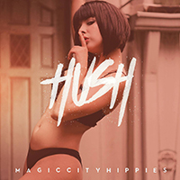
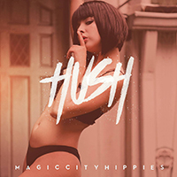

Image obtained from EPK sent by Robby Hunter.
The Magic City Hippies describe themselves as an "indie funk, dusted with a taste of hip-hop and baked in an oven of soul." Formally known as the Robby Hunter Band, these Miami natives became Spotify's most viral track in August of 2016 with "Fanfare" and show no signs of slowing down. Just this past year they have performed at globally and nationally recognized festivals like Bonnaroo and Suwanee Hulaween.
 
